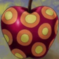
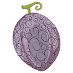
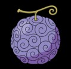
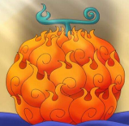

| Produto |
Descrição |
Preço (฿) |
Quantidade disponível |
|
Akuma no Mi Artificial: primeira fruta feita por humanos |
1.500.000 |
1 |
|  |
Smile: Akuma no Mi artificiais do tipo Zoan criadas com SAD. |
2.500.000 |
1589 |
|  |
Awa Awa no Mi é uma Akuma no Mi do tipo Paramecia que permite ao usuário de emitir e controlar bolhas de sabão. |
3.000.000 |
1 |
|  |
A Gomu Gomu no Mi é uma Akuma no Mi do tipo Paramecia que dá ao corpo do usuário as propriedades da borracha |
25.000.000 |
1 |
|  |
A Mera Mera no Mi é uma Akuma no Mi do tipo Logia que permite ao usuário criar, controlar e se transformar em Chamas à vontade. |
45.000.000 |
1 |